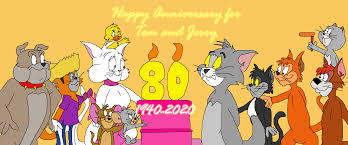

About Tom & Jerry
Tom is a grey and white mute domestic shorthair cat. He is usually but not always, portrayed as living a comfortable, or even pampered life, while Jerry is a small, brown mute, house mouse who always lives in close proximity to Tom.
Tom & Jerry and their friends
Tom & Jerry Characteristics
- Both characters display sadistic tendencies
- If someone is in danger the other always saves the one in danger
- They pretend to attack each other
- They bond over a mutual sentiment towards an unpleasant experience
Tom & Jerry's friends and enemies
Both have more enemies than friends, but you know keep your enemies closer, right?! Click ont the links below to read more about them.